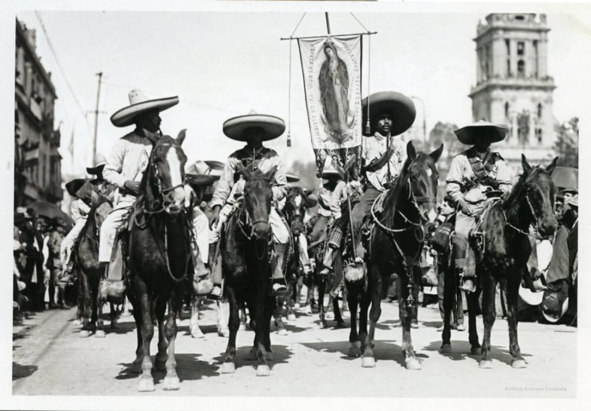
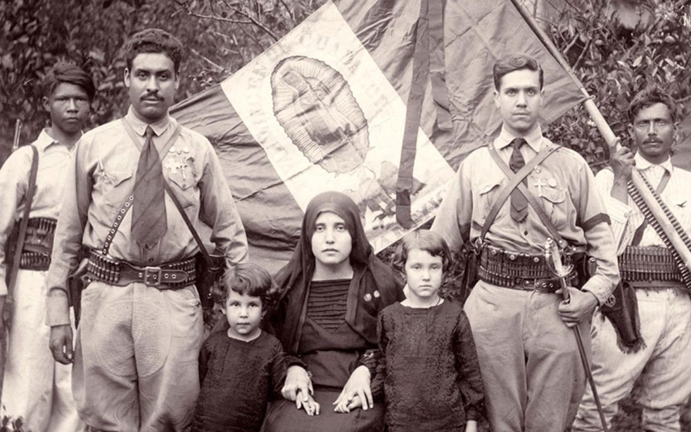
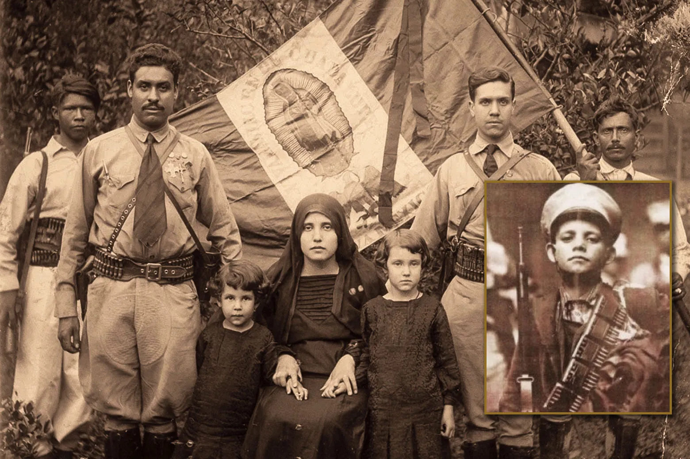

Archivo fotográfico · Colección histórica
Cien años de memoria, fe y sacrificio
Entre 1926 y 1929, el occidente de México se alzó en armas para defender su fe. Un siglo después, recordamos a quienes ofrendaron su vida.
Hubo un tiempo en que, por primera vez en cuatro siglos, las campanas de México callaron —y un pueblo entero tomó las armas al grito de Cristo Rey.
Más de noventa mil personas murieron en una guerra que el mundo olvidó, y que los Altos de Jalisco, las barrancas de Michoacán y las plazas del Bajío todavía guardan en la memoria de sus muertos. Esta es su historia.
Sitio conmemorativo · 1926 – 2026
de historia
perdidas en el conflicto
de guerra abierta
canonizados por JP II
afectados por el conflicto
Archivo fotográfico · Colección histórica

P. Miguel Pro S.J. · Foto: Dominio público
· República Mexicana · 1926–1929 ·
El conflicto se concentró en el occidente y centro del país. Jalisco, Guanajuato, Michoacán y Aguascalientes constituyeron el corazón de la resistencia; Zacatecas, San Luis Potosí y Colima completaron el cinturón cristero.
Principal teatro de operaciones · 1926–1929
Jalisco fue el corazón de la Guerra Cristera. Guadalajara concentró la resistencia urbana; Los Altos —Tepatitlán, Lagos de Moreno, San Juan de los Lagos— fueron zona de intensa guerrilla. Más de 20,000 cristeros jalisciences tomaron las armas.
Segundo estado en intensidad cristera
León, Irapuato y el sur del estado fueron escenario de combates constantes. Los cristeros guanajuatenses se destacaron por su organización y resistencia prolongada.
Cuna de líderes cristeros y mártires
La región de Sahuayo y la Cañada de los Once Pueblos produjeron destacados mártires. El Padre Cristóbal Magallanes, canonizado en 2000, desarrolló aquí su ministerio.
Enclave estratégico en el Bajío
Pequeño pero estratégico por su posición entre Jalisco, Zacatecas y Guanajuato. Su población rural abrazó masivamente la causa cristera.
Estado natal del Padre Miguel Pro
Zacatecas aportó uno de los símbolos más reconocidos de la Cristiada: el Padre Miguel Pro, nacido en Guadalupe, Zac. El estado fue escenario de importantes operaciones militares.
Zona de apoyo y combate
Parte del cinturón cristero del Bajío. Su zona sur, limítrofe con Jalisco y Guanajuato, registró importantes actividades militares.
Puerta de la costa al Bajío cristero
Su frontera con Jalisco lo convirtió en zona de paso y apoyo logístico para los cristeros de la costa.
Extensión del frente occidental
Actividad cristera principalmente en la zona serrana, limítrofe con Jalisco y Durango, aprovechando el terreno montañoso para tácticas guerrilleras.
Frente norte de la Cristiada
Su vasto territorio serrano albergó grupos guerrilleros. Varios sacerdotes duranguenses fueron asesinados durante el conflicto.
Contexto político relevante
No fue teatro de operaciones mayor, pero vivió la aplicación de las leyes anticlericales con la misma dureza. Varios sacerdotes fueron expulsados y las iglesias clausuradas.
Lejos del núcleo cristero
Relativamente alejado del núcleo de la Cristiada. Su historia reciente de violencia revolucionaria había marcado una relación compleja entre la Iglesia y el gobierno en la región.



ArchivoCristeros · 1927–1929


ArchivoCristeros · 1928Imágenes: Archivo histórico · Wikimedia Commons · Dominio público
Jesuita fusilado sin juicio. Murió con los brazos en cruz. Beatificado en 1988.
Comandante militar cristero. Agnóstico que murió creyente en combate, semanas antes de los arreglos.
El "niño cristero". Torturado y asesinado a los 14 años. Canonizado en 2000.
Ahorcado de un árbol de mango. Sus últimas palabras: "Suba, suba. En el cielo lo veré."
El "Gandhi mexicano". Líder civil de la Liga. Torturado y fusilado en Guadalajara.
Juan Pablo II canonizó a 25 mártires mexicanos de la Cristiada en Roma.
La obra más completa sobre el conflicto. Meyer entrevistó a cientos de sobrevivientes y construyó el relato definitivo de la guerra.
El primer volumen narra la guerra desde sus orígenes. El segundo analiza el movimiento social. El tercero examina el papel de la Iglesia y el Estado. Meyer demuestra que la Cristiada fue un movimiento de campesinos que defendían su identidad frente a un Estado modernizador y laicista.
Biografía del Padre Miguel Pro, el jesuita que mantuvo la fe en la clandestinidad y fue fusilado en 1927.
Parsons narra cómo el joven jesuita regresó a México disfrazado para administrar sacramentos en la clandestinidad. Describe su arresto y el fusilamiento que el gobierno quiso usar como propaganda, pero que lo convirtió en mártir.
Relato épico de las batallas cristeras con testimonios directos de combatientes del occidente de México.
Rius Facius recopiló testimonios directos para construir una narrativa militar del conflicto. Detalla las tácticas guerrilleras, los líderes regionales y la vida cotidiana de los cristeros. Fuente primaria invaluable escrita desde la perspectiva del movimiento católico.
Microhistoria de San José de Gracia, Michoacán, que muestra cómo vivió una comunidad el conflicto desde adentro.
González y González narra la Cristiada a escala local, mostrando cómo el conflicto nacional se vivía en un pueblo concreto. Un clásico de la historiografía mexicana por su humanismo y profundidad documental.
Análisis académico de las relaciones Iglesia-Estado en México desde la Reforma hasta la Cristiada.
Olivera contextualiza la Cristiada dentro de la larga historia del conflicto Iglesia-Estado. Especialmente valioso por su uso de archivos eclesiásticos y gubernamentales para comprender las negociaciones de 1929.
Ensayos sobre las representaciones culturales, literarias y cinematográficas de la Guerra Cristera.
Publicado tras el estreno de "For Greater Glory", reúne a historiadores, críticos de cine y teólogos para analizar cómo la Cristiada ha sido recordada en la cultura popular mexicana. Incluye análisis de corridos, pinturas y películas.
· Reemplazar VIDEO_ID con el identificador de YouTube ·
Épica dirigida por Dean Wright, con Andy García como el general Gorostieta. Llevó la Cristiada a audiencias internacionales.
Testimonios, archivos fotográficos y análisis del historiador Jean Meyer sobre el conflicto.
El impacto cultural del conflicto en el cine mexicano a lo largo de un siglo.
En agosto de 1926, en Chalchihuites, Zacatecas, sonaron los primeros disparos de una guerra que el mundo no quiso recordar. Cien años después, ese silencio sigue siendo una deuda con los estados de México que vieron a sus padres, hijos y sacerdotes morir sin que ningún libro de texto escolar lo reconociera plenamente.
El centenario de 2026 no es solo un aniversario: es una oportunidad para que México reconozca uno de los episodios más complejos de su historia moderna. La Cristiada no fue ni una rebelión de fanáticos ni una guerra de la Iglesia: fue la respuesta de comunidades enteras —campesinos, madres, jóvenes, sacerdotes— ante la eliminación forzada de su identidad cultural.
Los 25 santos canonizados en Roma en el año 2000 son el recordatorio de que esta historia tiene nombre, rostro y fecha de martirio. Recordarlos no es política ni nostalgia: es honrar la verdad histórica de un pueblo que dijo No cuando el Estado le exigió callar lo que más amaba.